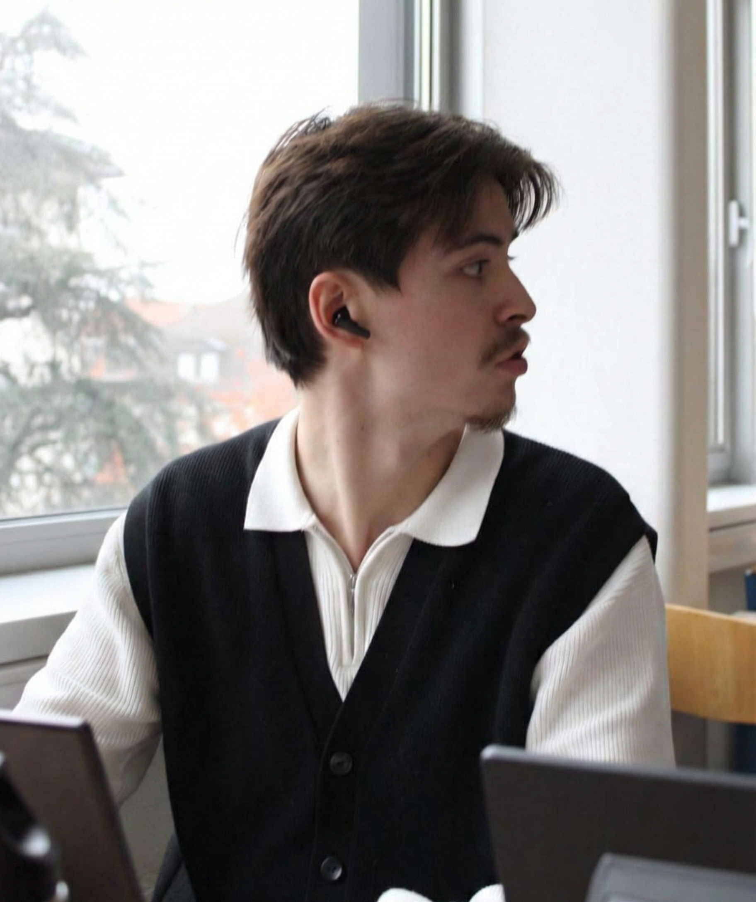

À Propos de Moi

Nguyen Luan
Actuellement étudiant en deuxième année de BUT MMI, je me spécialise en Développement Web et Dispositifs Intéractifs.
Suivant une formation pluridisciplaire, j'ai pu acquérir de l'expérience dans différents domaines me permettant d'utiliser de nombreux outils et logiciels aussi utiles les uns que les autres.
Étant un grand fan de codage, apprendre et maîtriser des langages/frameworks tels que : HTML5, CSS3, SCSS, PHP, TWIG, JS, SYMFONY et BOOTSTRAP m'a permis d'agrandir mon éventail de compétences afin de me rapprocher d'un développeur Full-Stack.
Lors de mon temps libre, je me prête à des activités diverses :
- Jeux vidéos : FPS, TPS, MOBA, ...
- Sport : Musculation, Volley en loisir (Bientôt?).
- Activtés Manuelles : Crochet, Pipe-Cleaners (Tige Chenille) pour la création d'objet tel que des fleurs.
- Dessin : Dessin traditionnel et digital.